文字
背景
行間

_
鹿山会後援オランダ研修 R6.11.22-12.1 11年生5名参加 ②
11月26日 アムステルダム研修
市内散策およびアムステルダム国立美術館、海運博物館，アンネフランクの家のうち一ヶ所の見学
美術館ではレンブラントの夜景やフェルメールの牛乳を注ぐ女、オランダ絵画などについてやり取り形式で説明を受けました。(集合写真は東京駅のモデルとなったアムステルダム中央駅)
11月27日 プロジェクト開始
What if you woke up 20 years in the future?
20年後の世界の姿を10班それぞれが選んだ分野(housing, education, health, transportation,etc.)について最終日に発表します。
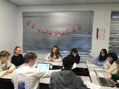

鹿山会後援オランダ研修 R6.11.22-12.1 11年生5名参加 ①
11月23日
ライデン市内、シーボルトハウス、国立民族学博物館を見学し、ホストファミリーの待つウィンシュホーテンヘ移動しました。
11月25日
日曜日を挟んでInternational Youth Conferenceが始まりました。初日は参加6カ国(oオランダ、ドイツ、ポーランド、フィンランド、スペイン、日本)による学校・参加生徒紹介と１０班の活動グループに分かれてアイスブレーカーを行いました。


 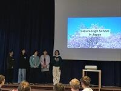
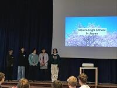
海外理解促進のための講演会 １１月１５日（金） １学年
講師：佐藤秀樹氏
講演：協働と教育で築く未来－国際協力の現場から考える持続可能な発展
青年海外協力隊としてエクアドルで２年間、環境保全型農業の技術や有機的な野菜栽培の普及啓発活動をされた佐藤先生のお話を伺いました。現地の方と生活をともにしながら、小規模農家や学生、子供、女性のグループ等に向けてワークショップを開いたり、自分たちの帰国後に中心となって活動する地元のリーダーを育成されたり、エクアと瑠からの帰国後はバングラデシュやベトナム、インド、イラン、スーダン、ミャンマーでも農村開発や環境保全のお仕事をされた経験をお話しいただきました。
様々な価値観考え方があることを前提として状況に合わせた実施可能な解決策を考えて連携・協働することや、当事者意識を持って社会の様々な事象について考え、自ら積極的に行動していくことを大切にしてほしいというメッセージをいただきました。


 令和6年度球技大会
令和6年度球技大会
10月16日（水）令和6年度球技大会が行われました。当日は、天候にも恵まれ、生徒たちの笑顔とエネルギーに溢れた一日となりました。特に３年生にとっては最後の学校行事ということもあり、思い切り楽しもうという姿勢が印象的でした。高校生活の思い出の一つとして生徒の心に残ったことと思います。
 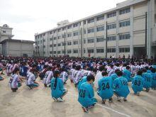 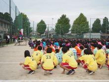
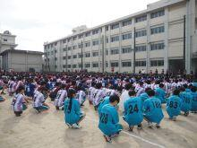 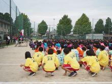
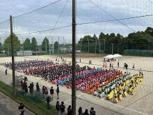  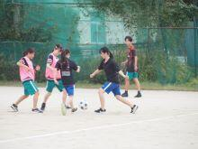
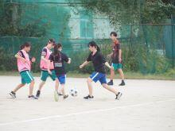
 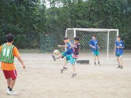
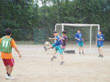 
各競技の優勝チームを紹介します。
男子ハンドボール ３年E組
男子サッカー ３年A組
男子バレーボール ３年F組
女子ドッジボール ３年D組
女子サッカー ３年C組
女子バレーボール ３年G組
 ツェツィリアン・ギムナジウム来校（10/7～10/13）（３）
ツェツィリアン・ギムナジウム来校（10/7～10/13）（３）
交流活動


 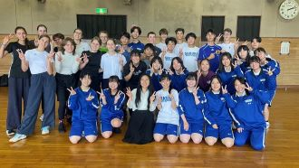
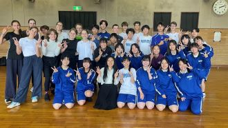
さよならパーティ
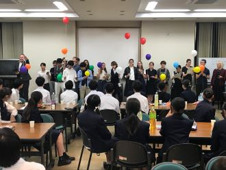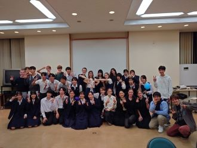
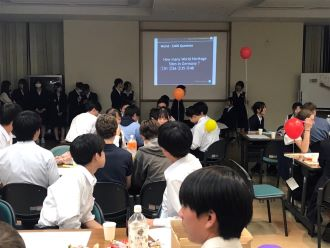
ホストとお別れ
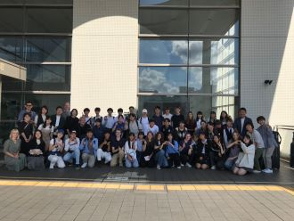
ツェツィリアン・ギムナジウム来校（10/7～10/13）（２）
部活動見学・体験
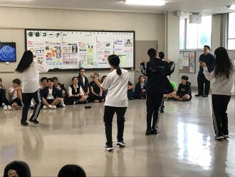
 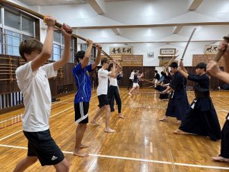
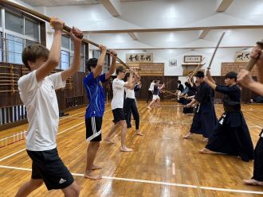
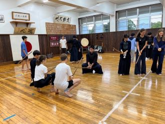
ツェツィリアン・ギムナジウム来校（10/7～10/13）（１）
ドイツ、デュッセルドルフ市の交流校ツェツィリアン・ギムナジウムの生徒18名、先生2名が来校しました。生徒は１週間本校生徒宅にホームステイし、様々な授業、部活動、交流活動を通して日本の生活を体験し、佐倉高校生徒の交流を深めました。
授業風景
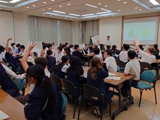
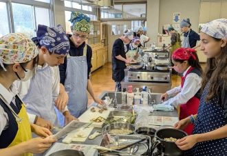
 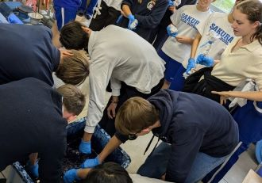
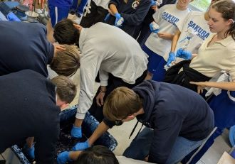


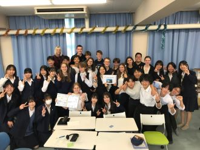
 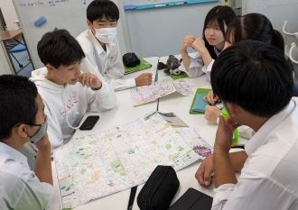
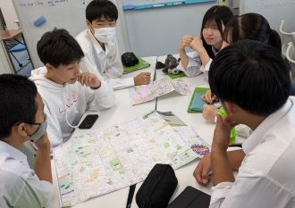
 ブリティッシュヒルズ研修（9月29日～10月1日）
ブリティッシュヒルズ研修（9月29日～10月1日）
9月29日（日）から10月1日（火）まで、45人の1年生が参加し、ブリティッシュヒルズ国内英語宿泊研修が行われました。朝には霧が立ち込め、まるで中世のイギリスにいるかのような雰囲気の中で英語研修が行われました。英語でのチェックインから始まり、Survival Englishなどのウォームアップアクティビティ、論理的思考に基づく問題解決法を学ぶRAVENメソッド、新商品の開発とプレゼンテーションを行うLion's Den、そしてイギリスのゲームやスポーツ体験などに取り組みました。


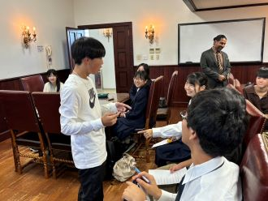
 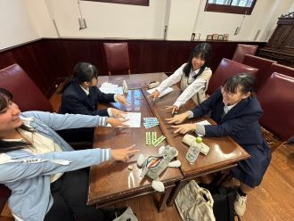
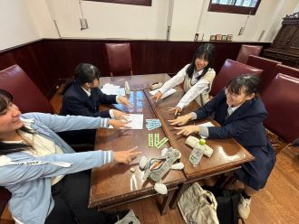
 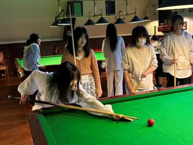
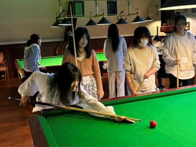 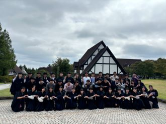
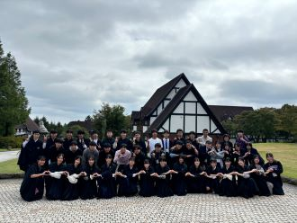
ブリティッシュヒルズ宿泊研修 結団式
佐倉高校では、希望者を対象にブリティッシュヒルズ研修を実施しています。今日は結団式が行われました。３日間の英語研修に向けての心構えや、役立つ表現などを確認しました。


 佐倉アクティブSSH講座「医学体験講座」
佐倉アクティブSSH講座「医学体験講座」
令和６年８月２２日（木）成田市の国際医療福祉大学において佐倉アクティブSSH講座「医学体験講座」が開催されました。１年生１０名（普通科６名、理数科４名）、２年生８名（普通科７名、理数科１名）の計１８名が参加し、講義及び施設見学を行いました。
講義では、チーム医療の重要性や臨床検査技師・細胞検査子士の病理検査における役割を学び、様々ながん細胞を染色したプレパラートを観察しました。
施設見学では、成田シュミレーションセンター「SCOPE」を見学しました。ER、手術室、病室、在宅ケア室、模擬診察室等、実際の患者さんに対しての治療全体を想定した施設でした。コンピューター制御された模擬患者をどのように診察、処置したかを全てモニターで記録し、振り返ることができるようになっており、その都度適切な対応について学ぶことができるようになっていました。医療系の進路を考えている生徒にとっては具体的にイメージをすることができ、とても充実した講座になりました。


 Global Studies Program 8/19〜8/23
Global Studies Program 8/19〜8/23
２９名の１、２年生が参加し、アメリカ人講師と６名の海外留学生グループリーダーを迎え４日間の英語研修が行われました。グループリーダーはガーナ、ナイジェリア、中国、インド、ネパール、ベトナムなど様々な国出身で日本の大学院で学んでいる大学院生です。
Positive Mindset, Leadership, Quality Education, Diversity 等様々な話題について話し合ったり、自分の強みや自分の将来を考えたりと、密度の高い４日間になりました。
講師のマイクさんが常に強調していたのがEnglish speakers’mindset, Two-way communication, Ask many questions, OK to interrupt, No Silenceの重要性です。自分の考えを伝える、十分に説明するというのは日頃の授業でも強調されていますが、１日中英語漬けの中でというのは普段できない訓練だったと思います。
また、様々な国の文化や教育の話、大学での研究分野のお話などを伺うこともでき貴重な機会でした。
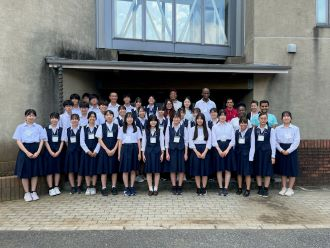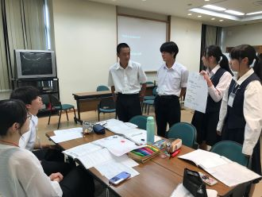


 佐倉アクティブSSH講座「植物の成分を精製してみよう！」
佐倉アクティブSSH講座「植物の成分を精製してみよう！」
令和６年７月２４日（水）の午後、佐倉市の株式会社常磐植物化学研究所において「植物の成分を精製してみよう！」をテーマに佐倉アクティブSSH講座が開催されました。１年生１５名（普通科９名、理数科６名）、２年生普通科２名の計１７名が参加し、実習、ハーブ園研修、施設見学を行いました。 実習では、「目の疲れ」や「視力改善」に効果があるとされているカシスの抽出液から、含まれているアントシアニンをカラムクロマトグラフィーにより分離し、薄層クロマトグラフィーの多点打ちの手法を用いて、含まれている４種類の色素の分離・確認を行いました。ハーブ園では、抗酸化作用があり、目に良いとされるブルーベリーや天然甘味料として知られ砂糖よりも低カロリーであるステビア、料理や精油として利用されているバジルなどに触れたり、においや味を確認しながら研修しました。 施設見学では、実習で行った手法が実際にはどのような規模で行われているかの説明を受けました。午後の４時間ほどの講座でしたが、とても充実した講座になりました。
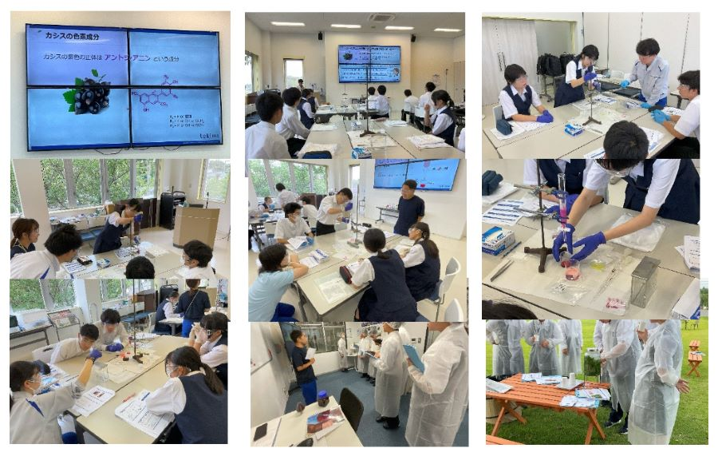
 鍋山祭開催
鍋山祭開催
6月28日(金)29日(土) に鍋山祭が行われました。生徒たちは長期間懸命に準備に取り組んでおり、当日は各クラス凝った装飾が施されていました。また、心から文化祭を楽しむ生徒の様子が印象的でした。
 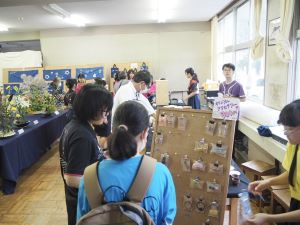
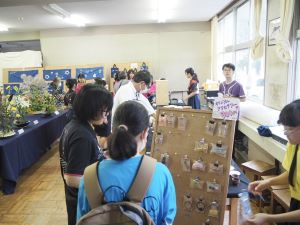
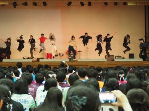


 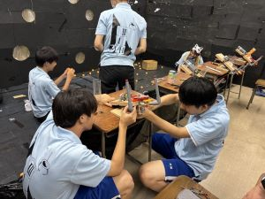
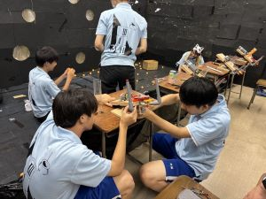
 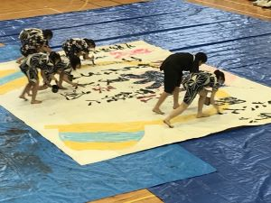
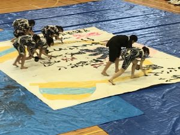
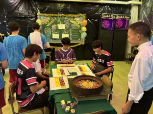
各部門投票結果
ゲームアトラクション ①3H ②1D ③1A
お化け屋敷 ①3E ②2E ③2F
販売 ①2D ②2A ③2C
劇 ①3D ②3B ③3A
部同好会有志 ①ラグビー ②松嶋君 ③軽音楽
1年装飾 ①1D ②1A ③1E
2年装飾 ①2C ②2D ③2A
3年装飾 ①3H ②3E ③3D
鍋山大賞 ①ラグビー ②3D ③3B
令和6年度文化祭「鍋山祭」についてのお知らせ
令和6年度の鍋山祭は対象者を限定して公開いたします。安全と円滑な運営のため、皆様のご理解とご協力をお願いいたします。
（１）日時
令和6年6月28日（金）9:30～15:45／6月29日（土）9:00～14:00
（２）対象者（以下に該当しない方は、令和６年度鍋山祭への来場はご遠慮ください）
①本校生徒の家族の皆様
6月28日（金）と6月29日（土）のいずれかで来場できます。
招待チケットは本校生徒を通じての申請となります。
②本校生徒の友人の皆様
6月29日（土）のみ来場できます。
招待チケットは本校生徒を通じての申請となります。
（３）備考
・本校生徒による招待チケット申請期間は6月10日（月）～6月14日（金）です。
・来場される方は、招待チケットを持参し、受付で提出してください。
・招待チケット1枚につき1名が入場できます。ただし未就学児はチケット不要です。
・当日は裏門を閉鎖いたします。正門からご入場ください。
・上履き、外履き入れをご持参ください。
・駐車場はございませんので、公共交通機関をご利用ください。
・1日目の発表時間後に行われる中夜祭は本校生徒のみの参加となります。
・（ご家族の皆様へ）6月29日（土）は大変な混雑が予想されます。6月28日（金）の来場を是非ともご検討く
ださい。
※中学生及びその保護者の皆様へ
都合により、中学生への文化祭の公開は行っておりません。学校説明会への参加をご検討ください。
 サクラアート開催報告
サクラアート開催報告
令和6年3月19日～22日の期間、地域交流施設にてサクラアートを開催いたしました。サクラアートとは、佐倉高校の文化部活動合同作品展です。美術部・書道部・工芸部・写真部・華道部による素敵な作品が揃いました。同級生や職員だけでなく、保護者、OBOGの皆様など多くの方々に作品を見ていただく機会となりました。ありがとうございました。


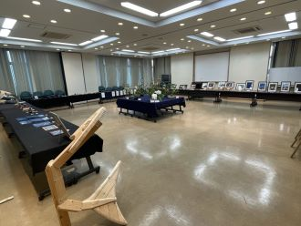


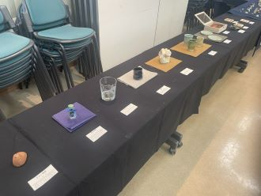
 佐倉アクティブSSH講座「身近な高分子講座」
佐倉アクティブSSH講座「身近な高分子講座」
令和６年３月１４日（木）午後１時から午後２時３０分まで、本校化学実験室において、佐倉アクティブSSH講座「身近な高分子講座」が開催され、１４名の生徒（２年普通科２名、理数科１名、１年普通科６名、理数科５名）が参加しました。講座では、人類がいつ頃から高分子を積極的に利用してきたのか、高分子とはどのようなものなのか、具体的な高分子として「ゴムの弾性」、「食品用ラップの耐熱性」などを例に高分子特有の特徴がどのようにして引き出されているのかを高校で学習する化学分野と関連付けながら学びました。また、高分子の特徴を利用するとどのような最先端の研究分野に繋がっていくのかも知ることが出来ました。

 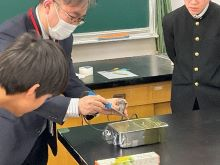
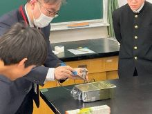
 GTEC Outstanding School Award及び奨励賞を受賞
GTEC Outstanding School Award及び奨励賞を受賞
佐倉高校では、英語力の定点観測のために、４技能試験GTECを一斉に実施しています。今年度も、２学年と３学年において、前年度のスコアと比較して伸びが著しい学校に送られるGTEC Outstanding School Award及び奨励賞を受賞しました。日頃の授業や、各生徒の努力の成果が発揮されたものと確信しています。
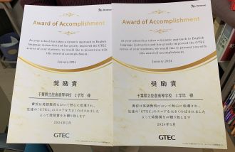
 SSH赤外線天文学講座
SSH赤外線天文学講座
令和６年２月１０日（土）午後１時から本校化学講義室において、SSH赤外線天文学講座が開催され、２年生５名、１年生８名の計１３名（普通科１０名、理数科３名）が参加しました。 講座では、宇宙科学研究所 奥田治之 名誉教授から、「赤外線で見る宇宙」をテーマに赤外線の特徴を生かした天体や宇宙現象の研究について、「冷たい宇宙」、「塵雲の霞を透かして見える暗黒の世界」、「宇宙を探る新しいプローグ」、「遠い宇宙、昔の宇宙」について講義していただきました。波長の長い赤外線を利用すると温度が低くて捉えにくい天体の存在を確認することできることや、ブラックホールの存在も確認できるなど大変興味深いお話が聞けました。
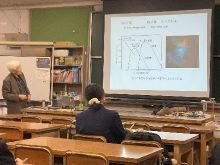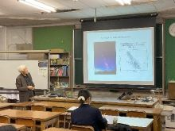
SSH「宇宙に生命の起原を探る」講座
令和６年１月３０日（火）、NPO法人科学技術振興のための教育改革支援計画から横浜国立大学名誉教授 小林憲正先生をお招きして、ＳＳＨ講座が開催され、理数科１年生が参加しました。講座では、「宇宙に生命の起原を探る」をテーマに宇宙生物学（アストロバイオロジー）の立場から「私たち（地球人）は、どのようにして誕生したのか？」、「地球以外にも生物はいるのか？」、「私たちは、この先どうなるのか？」について考えました。その中で、約３８億年前に最初の生命がとても高温の海で誕生したと考えられることや地球上に落下してきた隕石、月探査や小惑星からのサンプルリターンによる回収物から宇宙にもタンパク質の構成成分であるアミノ酸が存在することがわかっており、宇宙に生命の起原の解明のヒントがあるということも学びました。また、タンパク質を構成するアミノ酸は鏡像異性体の左手型により構成されていることもわかっており、その生成に関する知見も学びました。
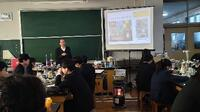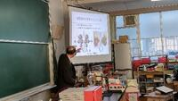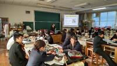
SSH・普通科 課題研究発表会 開催
2月2日（金）、課題研究発表会が開催されました。学年、文理、普通科理数科、すべての枠をとりはらい、154の研究班が20会場で繰り広げた課題研究の祭典です。研究テーマはすべて生徒自身が決定します。（下記URL参照） スライド投影が中心ですが、ポスター発表もあります。発表言語に英語を選ぶ班もあります。発表時間は8分。7分の質疑は「当たり前の文化」として盛り上がります。課題研究は学びの集約です。学びは人前で言語化して進化します。そのプロセスを生徒全員が経験できるのが本校の誇りです。


 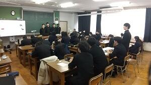
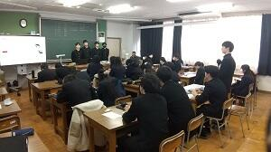 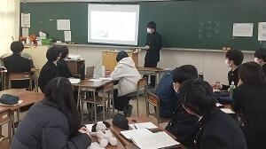
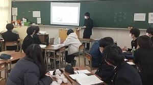

SSHシンガポール海外研修3日目
3日目は、ホテルで朝食を食べた後、午前中はマーライオン公園を散策し、スカイパーク展望デッキに向かいました。午後は、現地校St.Joseph’s Institutionの生徒と交流し、お互いの課題研究を発表し合いました。その後、植物園であるガーデンズ・バイ・ザ・ベイで植物に関して学び、深夜の飛行機で27(土)朝7:30に無事帰国しました。体調不良者も出ず、有意義な研修になりました。
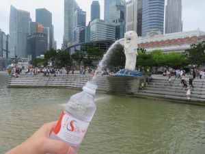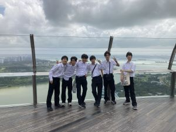


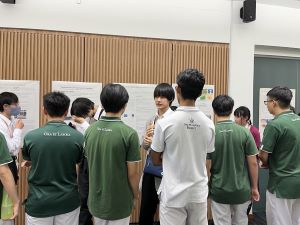
SSHシンガポール海外研修2日目
2日目は、ホテルで朝食を食べた後、午前中はスンガイ・ブロー湿地保護区を観察しました。午後は、まずFUJITSU様によるスーパーコンピューター「富岳」とAI技術を活用した実社会への応用に関する講話とシンガポールが抱える社会課題への解決策を考えるワークショップを行いました。続いて、横河電機様によるコンピューターによるプラントの制御機能、情報セキュリティ、AIを活用したロボットの数値測定に関する講話をしていただきました。


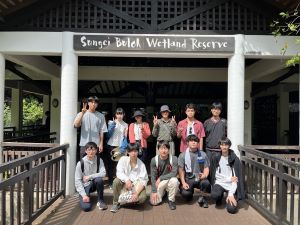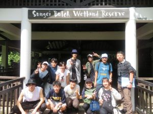


 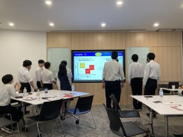
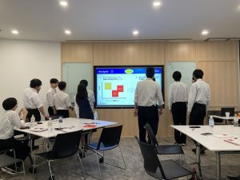


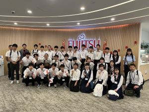
SSHシンガポール海外研修1日目
1/24〜1/27まで2年理数科生徒29名がシンガポール海外研修に参加しています。
1日目は、飛行機で約7時間過ごしたあと、ナイトサファリに向かい夜行性の動物の生態を学びました。


1月23日 課題研究「学びの発表会」開催
発表して聴衆の反応を実感する、ここまでが課題研究サイクルです。この後、2月2日に全校規模の課題研究発表会を開催します。今回の「学びの発表会」はそのプレ発表会に位置付けています。発表はクラス単位で行いました。クラス内での研究成果の共有と発表内容のブラッシュアップが目的です。質問や鋭い指摘が飛び交いました。失敗も論理の矛盾もこの段階で認識します。探究は永遠に続く学びですから目指すのは現段階のゴールです。本校の課題研究テーマは多様です。154の研究班が自らテーマを設定しました。サイエンスも地域課題も英語発表も、教員不足対策もICT教育への提言もあります。発表テーマの一覧を以下のPDFデータで案内します。
20240202_発表班一覧.pdf


鹿山会後援ドイツ研修（７）現地12月16日(土)最終日
楽しかったホームステイ、ドイツでの研修も終わりいよいよ本日帰国の途につきます。

ホストファミリーや先生方との集合写真
鹿山会後援ドイツ研修（６） 現地12月15日(金)
午前中はホスト生徒の授業に参加、その後お別れパーティーで各ご家庭から持ち寄ったお昼をいただきました。

写真左：さよならパーティ
写真右：校庭レク
鹿山会後援ドイツ研修（５） 現地12月14日(木)
ツェツィリアンギムナジウムで学校案内やクイズ、本校生徒の課題研究発表、授業参観、カフェテリアでホストとの昼食の後、 デュッセルドルフ大学に向かい、日本語科の学生さん達に課題研究発表を聞いていただきました。今日だけでも合計3回ずつ発表し、感想や情報をいただくことができました。


鹿山会後援ドイツ研修（４） 現地12月13日(水)
エッセンのツォルフェアアイン炭鉱業遺産群や17〜19世紀の街並みが残るケドヴィッヒを訪れました。夜からいよいよホームステイが始まります。
鹿山会後援ドイツ研修（３） 現地12月12日(火)
デュッセルドルフでの研修が始まりました。日本総領事館、及びデュッセルドルフ市庁舎で課題研究発表を聞いて頂いたり、各自の課題研究内容を説明し、質疑応答により現地の情況を伺いました。活発なやりとりが行われ大変有意義な時間となりました。

鹿山会後援ドイツ研修（２） 現地12月11日(月)
ドイツ研修2日目です。フランクフルトから デュッセルドルフに向かう途中にボン、コブレンツ、ケルンの世界遺産等を見学しました。


上段左・フランクフルトのライン川、上段右・コブレンツのヴィルヘルム1世像
下段左・フランクフルトのマルクト広場、下段右・コブレンツのライン川、モーゼル川の合流点、
鹿山会後援ドイツ研修出発 12月10日(日)～12月17日(日)
鹿山会後援ドイツ研修出発 12月10日(日)～12月17日(日)
成田国際空港から2年生18名がドイツ研修に参加しました。御後援いただいている鹿山会の方々もお見送りに来てくださり、代表生徒が研修への抱負を述べて出発しました。
普通科課題研究・中間発表会開催
11月21日実施の普通科課題研究中間発表会の様子をお伝えします。1・2学年全員、計17会場で行われました。1学年はクラス単位での発表、2学年はクラスに加え、SSH班、英語発表班、民間とのコラボ班など多様なカテゴリーに分かれて発表しました。各班の研究テーマは生徒自らが設定します。研究活動も生徒が主体的に調査・実験・フィールドワークに取り組みます。生成AIがもてはやされた1年でしたが、本校は成果物以上に個人的体験に重きを置いていたので対応できました。また「データの正しさ」がより問われる時代になりました。今後のブラッシュアップで精度を高めていきます。


鹿山会後援オランダ研修（６） 現地11月24日(金)最終日
Youth Conference最終日は各グループによる発表です。10グループによる、テーマ別の発表及びそれに続く講評をもって、全日程が終了しました。


鹿山会後援オランダ研修（５） 現地11月23日（木）
Youth Conference 4日目です。午前中は前日に引き続きグループディスカッションを行い、午後からは各自選んでアクティビティに参加しました。写真はDrama選択の生徒です。夕方には、各自が自分の国の料理を作って持ち寄りディナーを食べるInternational Cooking Festival という行事を行いました。佐倉高校の生徒が作った料理は好評で、あっという間に無くなってしまいました。

鹿山会後援オランダ研修（４） 現地11月22日（水）
Youth Conference 3日目、午前中はグループ別にディスカッションのテーマを決めた後、各部屋に分かれてディスカッションを行いました。午後はバスで30分の、歴史ある街フローニンゲンを訪れ、4名から8名程度の班に分かれて研修を行いました。


鹿山会後援オランダ研修（３） 現地11月21日（火）
Youth Conference２日目は、アムステルダム研修でした。美術館を訪れるコースと、アンネ・フランクが隠れ住んでいた家を訪れ、ボートクルーズをするコースに別れ、充実した一日を送りました。

鹿山会後援オランダ研修（２） 現地11月20日（月）
いよいよYouth Conferenceが始まりました。今年は日本の他に、ポーランド、フィンランド、ドイツ、イタリアの交流校の学生が参加しています。

鹿山会後援オランダ研修出発 11月17日(金)～11月26日(日)
鹿山会後援オランダ研修出発 11月17日(金)～11月26日(日)
オランダ研修に1年生５名が参加しました。成田国際空港では御後援頂いている鹿山会の方も見送りに来てくださり、代表生徒が充実した研修への抱負を述べて出発しました。
18日（土）は午前中ライデンのシーボルトハウスや市内を見学し午後に移動、ウィンシュホーテンにあるドラードカレッジのホストファミリーと週末を過ごしています。
20日（日）からは欧州他国からの生徒も交えた1週間にわたるYouth Conferenceに参加します。


海外理解促進のための講演会
海外理解促進のための講演会 令和５年１１月１７日（金） １学年
「異文化理解と国際協力」滝沢光太郎氏
ＪＩＣＡ青年海外協力隊員としてパプアニューギニアで理学療法を行った滝沢氏が、現地での人々との交流、現地の文化・習慣・環境を生かしたリハビリに取り組んだ体験を通して考える異文化理解・国際協力についてお話くださいました。参加者は大いに刺激を受け、終了後の質疑応答も活発に行われました。
感想より
・異文化理解は相手とのコミュニケーションの過程に生じる副産物であるというところになるほどと思った。色々なことに挑戦して経験を積み、自分の考えを広げていきたい。
・自分の価値観で優しさを押し付けてしまうと、他の価値観を持つ人を否定してしまうことや、ありがた迷惑になりかねないことが分かった。そうならないためにも自分の知識の中で完結させることなく、相手の状況、価値観、文化など様々なことを尊重することが大切だと思った。また、勝手な考え方からの優しさを押し付けるのではなく、持続可能なものにしていくにはどうすればよいか一緒に考えることが大切だと思った。
・貧困や戦争、紛争、教育格差やジェンダーなどの問題は、問題を知っているだけでは解決には繋げられないから、それが起こる背景をよく知らないといけないということをとても考えさせられた。表面だけ知って語るのではなく、現地に行ったり専門的な知識を得て、初めて考えることがスタートできると思ったので、留学したいと思った。


 修学旅行4日目
修学旅行4日目
4日間、楽しく過ごすことができたようです。
中学生の時に、修学旅行が中止になった生徒もいましたので、初めての京都・奈良ということもあったでしょう。
保護者の皆様、修学旅行ではご協力ありがとうございました。


 修学旅行4日目
修学旅行4日目
こちらのクラスは、北野天満宮参拝と和菓子作り体験です。
夢の実現のために、しっかりと祈願してきたことでしょう。
 修学旅行4日目
修学旅行4日目
本日は修学旅行最終日。
あいにくの雨の中、クラス別行動に出発です。
着付け体験や和菓子作り体験等、京都の文化を体験してきます。

 修学旅行3日目
修学旅行3日目
今日も班別行動です。まずは、腹ごしらえから。
たくさん食べて、京都市内へ出発です。
空には、うっすらと雲がかかっていますが、太陽も出ていて昨日よりは暖かく感じます。


修学旅行2日目
これから、班別行動に出発です。
京都、奈良方面を訪れます。


 修学旅行１日目（午後）
修学旅行１日目（午後）
午後は、奈良県内でクラス別行動を行いました。


 修学旅行１日目（出発）
修学旅行１日目（出発）
１１月１４日（火）２学年は東京駅発９時１８分のぞみ３１７号で、関西への修学旅行に出発しました。車内で昼食後、午後はクラス別の行動となります。


美術・工芸部 総合文化祭に出品
千葉県立美術館で開催される『令和5年 千葉県高等学校総合文化祭美術・工芸作品展』に美術部と工芸部の作品が展示されます。入場無料でどなたでもご覧いただける作品展となっておりますので、ぜひご来場ください。
会期:11月7日(火)～11月12日(日) 9:00～16:30
場所:千葉県立美術館
(美術部は第4展示室、工芸部は第6展示室にて展示しています。)


英語拠点校事業による公開授業の実施について
１０月２６日（木）、県教育委員会指定の英語教育拠点校の事業の一つとして、公開授業を実施しました。今年度は、千葉県内の公立私立の小・中・高等学校を対象に参加を呼びかけ、当日は１４名の先生方の参加となりました。本校教員による２時間の授業を参観後、東京歯科大学教育講座准教授 今井肇先生の講演「ChatGPTが英語教育にもたらすもの」、研究協議、指導助言の日程で進めました。研究協議では、具体的な授業の進め方等について、校種を超えて活発な意見交換をすることができ、大変意義ある研究協議となりました。この会の成果を各校に持ちかえって授業改善に役立てることが期待されます。


英語科では面接練習を行っています
英検２次試験を週末に控え、英語科では昼休みや放課後に面接練習を行っています。佐倉高校では、希望者を対象に、英検２級の試験を年間３回、準会場として実施しています。１次試験の結果が出た後、ALTの先生はじめ、英語科の職員で希望する生徒一人ひとりに２次試験対策を行います。最近では、従来型の英検だけでなく、特に準１級を中心に、CBT試験を受験する生徒も増えてきました。随時、ライティングの添削やスピーキングの練習を行い、資格取得をサポートしています。


 令和５年度 球技大会
令和５年度 球技大会
【男子バレーボール】 ３年E組
【女子バレーボール】 ３年D組